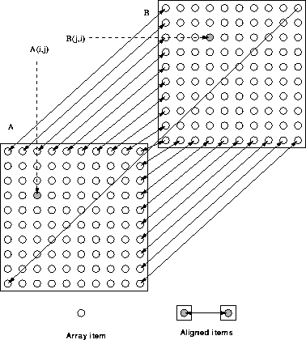

Here we are aligning a row of A with a column of B and vice-versa. The colon syntax cannot be used to specify this, we must also use the symbolic syntax. The statement:
REAL, DIMENSION(10,10) :: A, B !HPF$ ALIGN A(i,:) WITH B(:,i)
uses two symbols (a colon and i) to specify the first
dimension of A is aligned with the second dimension of B (the
symbol i) and
the second dimension of A is aligned with the first dimension of
B (the colon symbol). Again the colon implies conformance, in
other words, the first dimension of B has the same extent as the
second dimension of A.
Effectively this says:  i, j, elements
A(i,j) and B(j,i) are local. This could also be written:
i, j, elements
A(i,j) and B(j,i) are local. This could also be written:
!HPF$ ALIGN A(:,j) WITH B(j,:)
this is similar to the first except that the symbol j is used and the conformance between dimensions is for the first dimension of A and the second dimension of B.
A further way of expressing this could be:
!HPF$ ALIGN A(i,j) WITH B(j,i)
Here i and j are ``symbols'' not variables and are used to match dimensions their value (if any) is unimportant. The only difference is that there is nothing implied about the extents of the dimensions.
Figure 27 is supposed to show how elements A(1,:) (the first row of A) and B(:,1) (the first column of B) are aligned with each other and so on. A is aligned with the transpose of B.

Figure 27: Visualisation of Transposed 2D Alignment
The two shaded blobs are also aligned and are therefore resident on the same processor.
This alignment is suitable for,
A = A + TRANSPOSE(B)*A ! all local